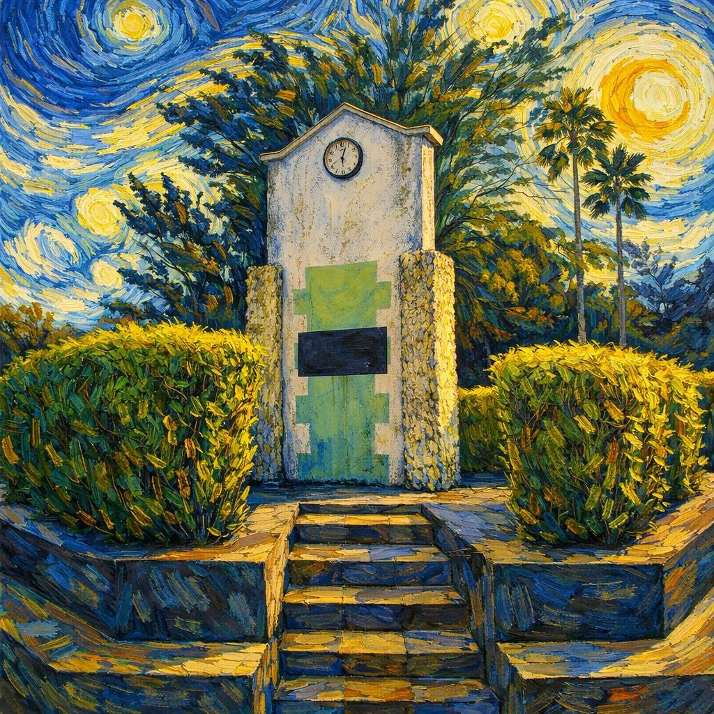

Reference Image
Erected in 1993 by Dato’ Hj. Ramli Abd. Rahman, this Time Monument stands in the former Taman Astakona as a heartfelt tribute to his alma mater and the cherished memories of MPSI and IPSI students. The sculpture reflects a British Neo-Colonial aesthetic, blending the elegant curved roofs of the Queen Anne Revival style with the rugged, textured columns of the Arts and Crafts movement. Designed to harmonize with the historic colonial architecture of the UPSI campus, the monument serves as a symbolic bridge between 1990s local materials and Western design. It remains a poignant landmark that “freezes” the nostalgic essence of 1993, ensuring that the school’s golden memories remain eternal even as time marches on.